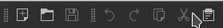
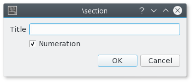
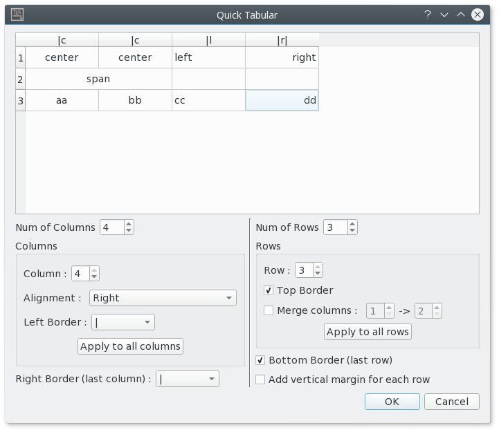
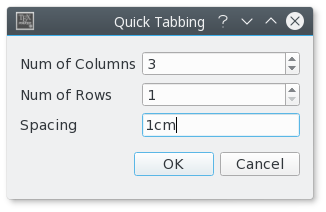

The standard commands (cut, copy, find...) can be launched via the "Edit" menu and the "Edit" toolbar.
Block selection is available by using the Alt key while moving the mouse cursor.

To define the preamble of your document, you can use the "Quick start" wizard ("Wizard" menu).

This dialog allows you to set the main features of your document (class, paper size, encoding...).
Note : You can add other options by clicking the "+" buttons. All yours settings are recorded.
You can also type your own preamble model in the editor : with the "Copy/paste" or "Save As" commands, you can use it for a new document.
To define a new part (section,subsection...) in your document with Texmaker, just use this combobox in the toolbar :

This will cause a dialog to pop up which allows you to define the style of the part (section,subsection...).
Note : the "Structure View" is automatically updated.

The "Structure View" (left panel) lets you quickly reach any part of your document. All you need to do is to click on any item (label, section...) and you will be taken to the beginning of the corresponding area in the editor.

The "Structure View" is automatically updated while typing. You can also use the "Refresh Structure" ("Edit" menu) command at any moment.
For each file, three bookmarks can be used to speed up navigation : just click on a line number to add or remove a bookmark. When you have already defined three bookmarks, you must remove one of them to add a new bookmark. To jump to the line corresponding to a bookmark in the editor, just click on the buttons in the status bar.

You can quickly set the format of a part of your text with this :


Additional option: a selected text can be directly framed by certain environments. Example: while clicking on the button "Bold" after having selected the word "Hello" , you will obtain the code: \textbf{Hello}.
This option is available for all the environments indicated by "[selection]" in the "LaTeX" menu.
The usual "spacing" commands are available in the "LaTeX" and "Math" menus. To insert quickly the "new line" LaTeX command, you can use the corresponding command in the toolbar (shortcut : Ctrl+Alt+return)
The usual list environments code can be insert quickly via the "LaTeX-List" menu.
Note : the shortcut for the \item command is Ctrl+Shift+I.
With the "Tabular" wizard ("Wizard" menu), the LaTeX code for a tabular environment can be quickly inserted :

You can set the main features of your table.
Note : this dialog allows you to type directly the code in the cells.
The corresponding LaTeX code is automatically inserted in the editor.
To help you to insert a "tabbing" code, you can use the "Tabbing" wizard ("Wizard" menu) :

To insert a picture in your document, just use the "\includegraphics" command in the "LaTeX" menu. Then, click on the "browser" button in the dialog to select the graphic file.
Note : if you click on the "+" button, a "figure" LaTeX environment will be added automatically.

This toolbox in the toolbar allows you to insert quickly the label, cite, ref, footnote... code.
Note : the labels used in your documents are displayed in the "Structure View".

Additional option:for the \ref command, a dialog box allows you to select directly the label.
You can toggle in the "in-line math" environment with the "$$" button in the toolbar (shortcut : Ctrl+Alt+M) or with the "Math" menu. The shortcut for the "display math" environment is : Alt+Shift+M.
The "Math" toolbar allows you to insert the most currents mathematical forms (frac, sqrt...)

With the "symbols panels" in the structure view, you can insert the code of 400 mathematical symbols and the \left and \right tags..(just click on the "symbols" buttons in the structure view)

Additional option: A "favorites symbols" (*) panel allows you to define your own "symbols panel".
- To add a symbol to the "favorites symbols panel", just right-click on a symbol in the others "symbols panels" and select "Add to favorites" in the pop-up menu.
- To remove a symbol in the "favorites symbols panel", just right-click on it and select "Remove from favorites" in the pop-up menu.
You can also define the format of your mathematical text via the "Math" menu.
For the "array" environments, a wizard (like the "Tabular" wizard) is available in the "Wizard" menu. With this wizard, you can select the environment : array, matrix, pmatrix.... The cells can be directly completed.

The "•" place holders, automatically inserted by some Texmaker commands, allow you to reach directly the next field in the created structure by using the "Tab" key ("Shift+Tab" to go backward).
Note : inserting a tabulation with the "Tab" key is deactivated if the line contains a "•" place holder.